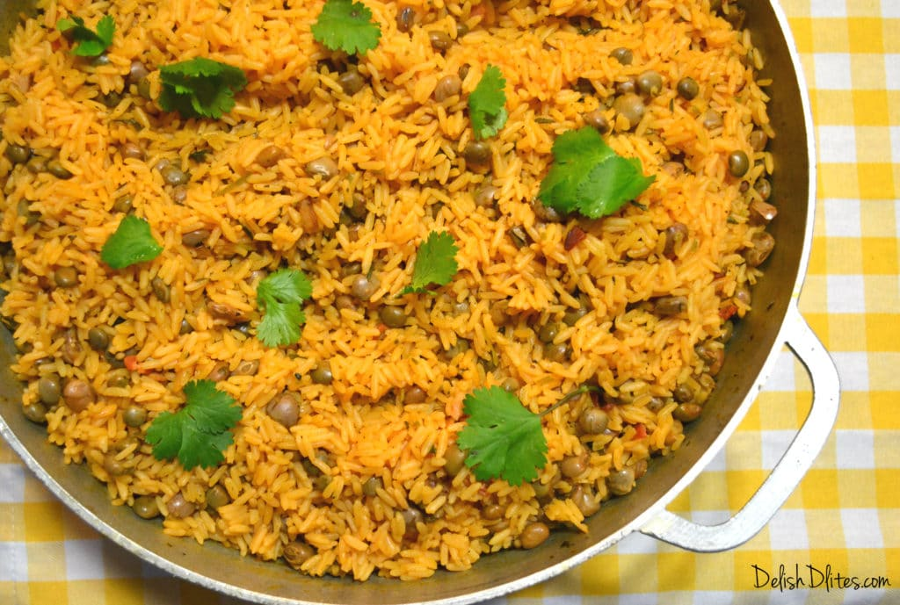
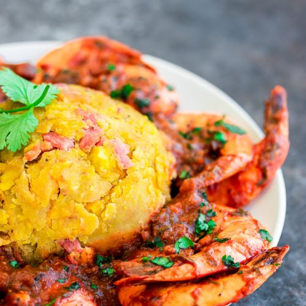

Arroz Con Gandules
A combination of yellow rice, pigeon peas, and pork, cooked in the same pot with sofrito.

Bistec
A general beef steak with sauce.

Mofongo con camarones
Fried green plantains mashed with garlic, and shrimp.

Pernil
A slow-roasted marinated pork leg or pork shoulder common in Latin American cuisine.